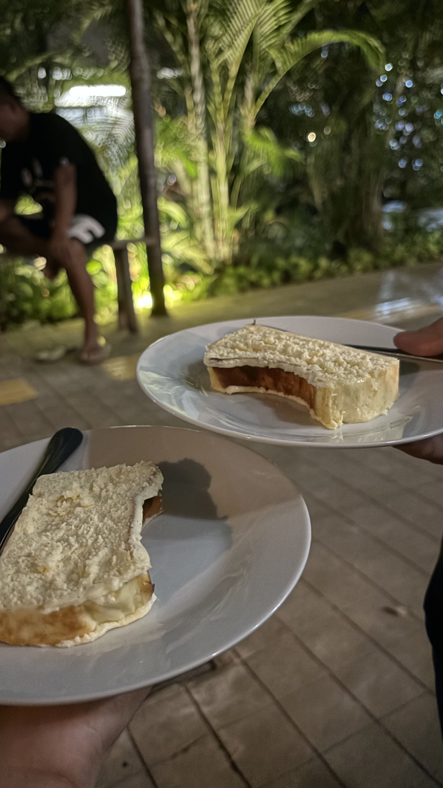
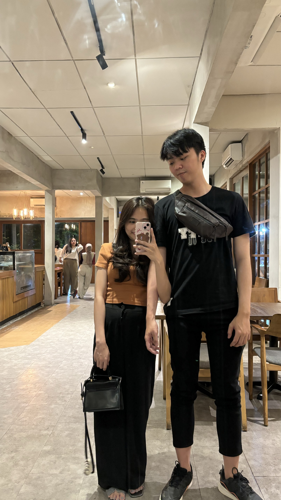
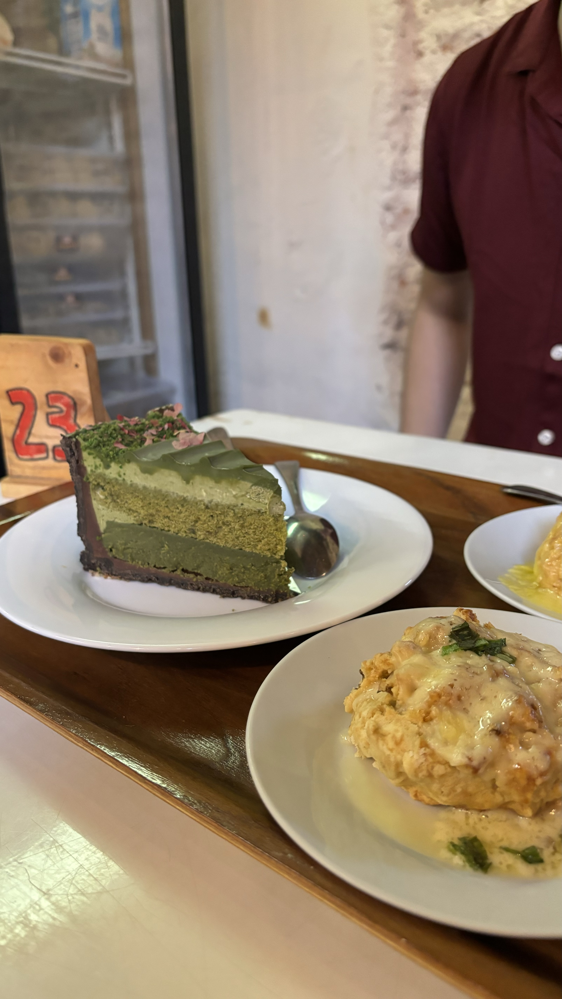
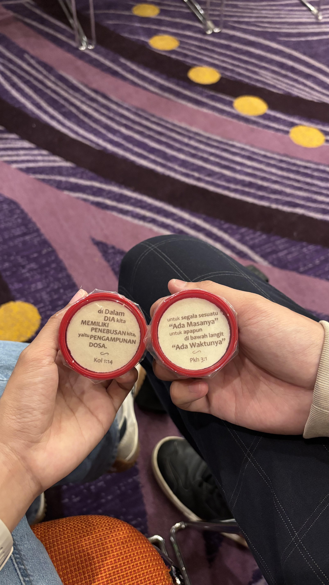
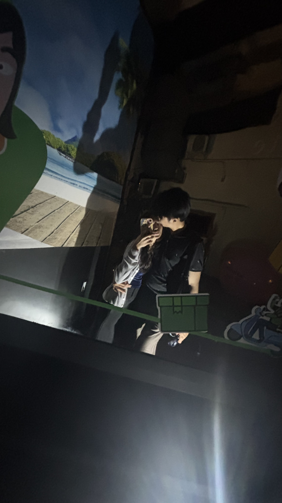
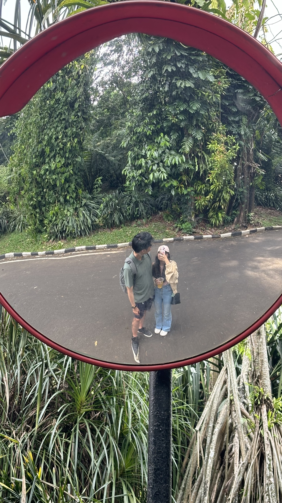
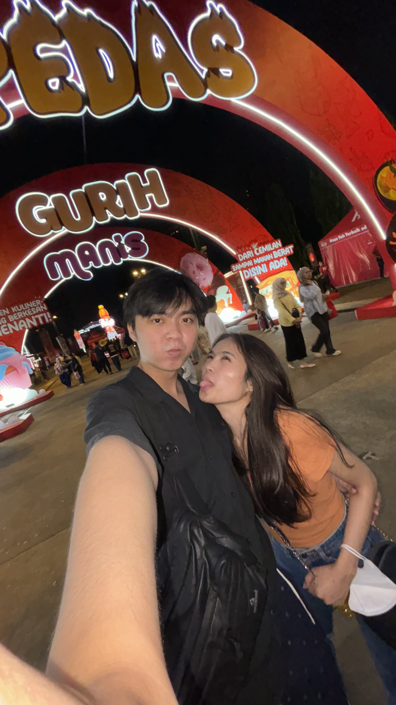
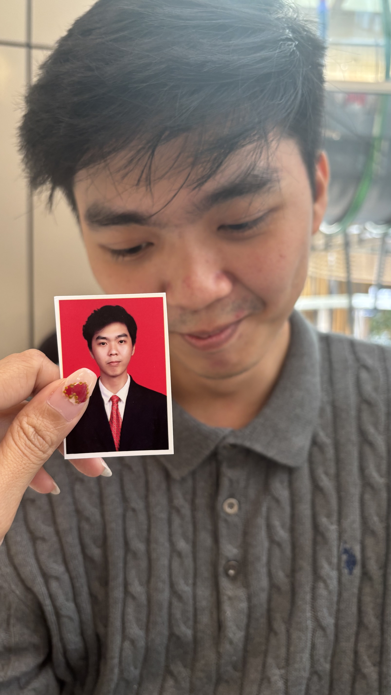
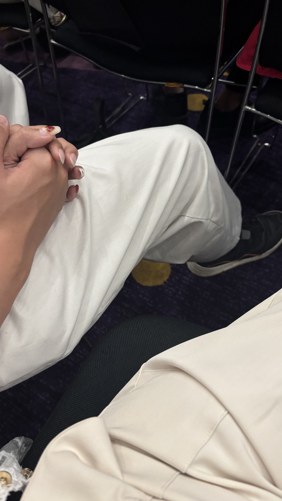

Alooo...
Hii Alvian Gustianto, cowo yang pertama kali video call stranger tapi tingkahnya bikin mood banget hihii
First meet kita kulineran. ak punya banyak kenangan kitaa loo, kamu kepo nda? kalo kepo cobaa klikk dehh

"Awal ketemu kulineran M blok hihi, first impression ak tuh kamu tinggi bangett yaolo...."

"Hahaa.. nama cafe nya apa hayoo 😌."

"Siapa yang awalnya bilang matcha itu rumput? hahaha tapi akhirnya kamu sukaaa kannn 🤭🤭."

"Asikk koko ini akhirnyaa balikk ke papi J lagi. Kamu halusss lebihhh rajinn ya sygg... abis ini baptiss yaa!!"

"Udah jadi Anak jaksell bangett ini mahh hihii"

"Maaci udah mau ak ajakin ke Bogor padahal jauh banget yaa hahaha..., kita harus rencanaan trip berikutnya yaaa!!"

"Asikk kulineran lagi, kamuu mam baksoo pedess sampe keringetann cuu banget yaolooo hahahaha. lain kali kamu gabole mam pedess lagiiii yaa!!!"

"Ak masih simpan fotoo kamu looo... koko koko ini pokoknya punyaa ak :)"

"Asikk natalan ak punya gandengannn hahaha 🤭🤭."

"ciee ciee yang salting parahh mau kasihh link. hahaaa.. tapi lucuu bangett kamu yaoloo - 22 Desember 2024?"
❮
❯
Maaci sygg 😘
maaci udhh ada di warnain halii halii ak. maacii udh syg samaa ak. kamuu nda boleee berubahhh yaa.
Happy MonthSarry Sayang!!